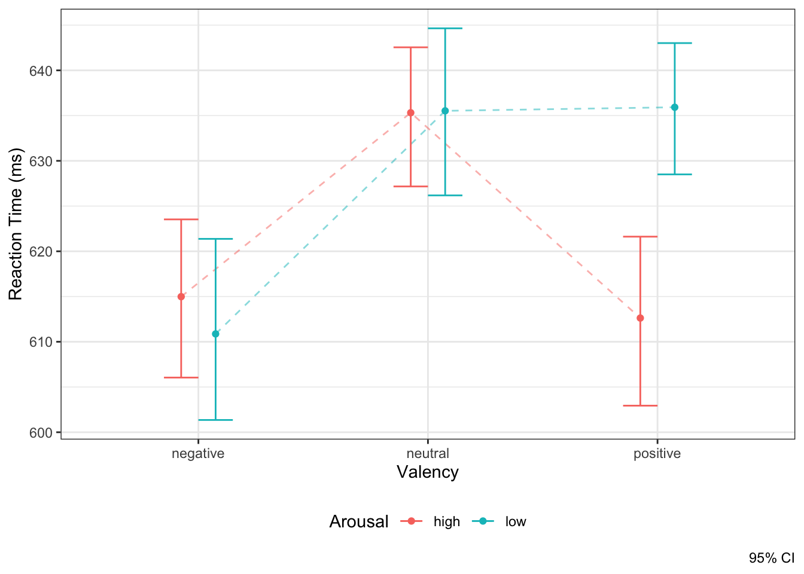

12 Многофакторный дисперионный анализ
Окей, мы разобрались с одним фактором. А что делать если у нас несколько независимых переменных? Ну, раз есть однофакторный дисперсионный, значит должен быть и многофакторный! Попробуем разобраться.
12.1 Усложняем э-э-эксперимент
Итак, в предыдущем варианте мы изучали, как валентность стимула связана со скоростью его опознания на задаче лексического решения. Во-первых, давайте сделаем так, чтобы каждый испытуемый проходил все экспериментальные условия, и таким образом посмотрим на дисперсионный анализ с повторными измерениями (repeated measures ANOVA, rmANOVA). Во-вторых, кроме валентности — положительной, отрицательной и нейтральной — важной характеристикой стимула с точки зрения исследования эмоций является ещё и arousal — степень выраженности эмоции от стимула (обычно переводят как «возбуждение», хотя, кажется, «интенсивность» по смыслу ближе). Оба перевода так себе, поэтому будем использовать термин «эраузал» — такие мы модные, шо жесть просто. Пусть у нас есть стимулы с высоким эраузалом и с низким эраузалом. Итого, нам эксперимент будет выглядеть как-то так:
- ЗП — время реакции
- НП1 — валентность: три уровня — нейтральные, негативные, позитивные
- НП2 — эраузал: два уровня — низкий и высокий
С точки зрения дисперсионного анализа у нас два фактора и одна зависимая переменная. Гениально.
Так, стоп — если у нас два фактора, можно ли провести два однофакторных анализа и успокоиться?
Можно. Нужно ли так делать?
Не нужно.
12.2 Взаимодействие факторов
Дело в том, что нам надо осмыслять картину происходящего как целое — во славу гештальта! — так как факторы могут взаимодействовать друг с другом. Получается, что в случае многофакторного дисперсионного анализа у нас появляются два эффекта:
- основной эффект фактора — интерпретируется аналогично тому, как это делалось в однофакторном дисперсионном анализе
- эффект взаимодействия факторов — говорит нам о том, что влияние одного фактора на зависимую переменную различается на разных уровнях другого фактора.
Посмотрим на картинки. Пусть есть два фактора A и B и какая-то зависимая переменная. Возможны следующие ситуации:
Вообще значимое взаимодействие факторов — это двоякая штука. С одной стороны, мы обнаружили интересную закономерность — возможно, именно ту, которую искали, и c’est cool. С другой стороны, взаимодействие,
- во-первых, может маскировать главные эффекты — если мы смотрим только на главные эффекты, то теряем часть информации о закономерности
- во-вторых, и это связано с первым пунктом, оно затрудняет интерпретацию основных эффектов.
Если взаимодействие не значимо, то с интерпретацией главных эффектов трудностей не возникает. Если взаимодействие значимо, то обсуждать главнные эффекты необходимо аккуратно, или не обсуждать вовсе. В частности, нижний ряд рисунков выше показывает, как эффект фактора A частично маскирует эффект фактора B, что отражается во взаимодействии.
Конечно, в модель можно ввести и более двух факторов, и логика тестирования статистической значимости останется, как и всегда, та же самая. Но помните, что чем сложнее модель, тем сложнее её интерпретация. А интерпретируя взаимодействие трёх предикторов вовсе можно сойти с ума.
В связи с этим, есть следующий момент. Когда вы планируете ваше исследование, сразу подумайте, как вы будете анализировать данные — что будет входить в модель в качестве основных предикторов, что в качестве ковариат, и какие взаимодействия в ней будут. Иначе измерить кучу переменных вы построите модель, результаты которой невозможно будет понять. Дизайн исследования очень тесно связан с аналитикой.
12.3 Результаты многофакторного дисперсионного анализа и тестирование значимости факторов и взаимодействий
Таблица результатов многофакторного анализа невероятно похожа на то, что было в однофакторном анализе, только строк чуть побольше, потому что факторов побольше:
## $ANOVA
## Effect DFn DFd F p p<.05 ges
## 2 valency 2 118 12.416635 1.276747e-05 * 0.064098306
## 3 arousal 1 59 2.873217 9.533691e-02 0.008412731
## 4 valency:arousal 2 118 4.742011 1.045078e-02 * 0.028560826
##
## $`Mauchly's Test for Sphericity`
## Effect W p p<.05
## 2 valency 0.9829358 0.6070562
## 4 valency:arousal 0.9420687 0.1771719
##
## $`Sphericity Corrections`
## Effect GGe p[GG] p[GG]<.05 HFe p[HF]
## 2 valency 0.9832221 1.467099e-05 * 1.0168281 1.276747e-05
## 4 valency:arousal 0.9452410 1.186789e-02 * 0.9755722 1.106044e-02
## p[HF]<.05
## 2 *
## 4 *Мы видим знакомую нам таблицу результатов дисперсионного анализа, где есть F-стастика и p-value. Статистический вывод осуществляется так же, как и обычно. В данном случае мы видим, что фактор валентности стистически значим, как и в предыдущем анализе, фактор эраузала — не значим, а вот их взаимодействие значимо. Ну, давайте нарисуем картинку, чтобы попытаться понять, что происходит.

Ну, вот как-то так — явственно явлено взаимодействие предикторов.
12.4 Условия применения дисперсионного анализа с повторными измерениям
Здесь их меньше, потому что допущения о независимости наблюдений между группами, очевидно, не выполнено.
- Количественная непрерывная зависимая переменная
- Нормальное распределение признака в статистических совокупностях, из которых извлечены выборки.
- Сферичность данных
- Проверяется с помощью теста Моучли (Mauchly test)
12.4.1 Сферичность
Как можно заметить, в списке нет допущения об гомогенности дисперсий — ведь у нас одна выборка, с которой мы получаем несколько измерений. В случае дисперсионного анализа с повторными измерениями проверяется предположение о сферичности данных (sphericity).
Сферичность — это модель данных, согласно которой дисперсии разностей между всеми парами уровней фактора равны. Нарушение допущение о сферичности — то есть отсутствие равенства дисперсий между парами уровней фактора — является серьезной проблемой для rmANOVA, так как при этом тест становится слишком либеральным, то есть увеличение вероятность ошибки I рода.
К нашему счастью, если есть нарушение сферичности данных, то машина сама нам об этом сообщит, а также применит необходимые поправки, чтобы избежать рост вероятности ошибки I рода. Формулы смотреть не будет, потому что их все равно никто не знает.
12.5 Типы сумм квадратов
Когда у нас в анализе появляется несколько факторов, мы можем тестировать их значимость различными способами. Способ тестирования определяет типа сумм квадратов, которых существует три.
- Первый (I) тип сумм квадратов проводит последовательные тесты значимости факторов. Величина эффекта фактора зависит от объёма выборки. Кроме того, результат вычислений зависит от порядка включения факторов в модель, что не оч хор.
- Второй (II) тип сумм квадратов проводит иерархические тесты, поэтому в этом случае результаты не зависят от порядка включения факторов в модель, однако величина эффекта все ещё зависит от объема выборки.
- Третий (III) тип сумм квадратов проводит частные тесты. К данному подходу есть некоторые статистические вопросы, однако результаты в этом случае не зависят ни от порядка включения факторов в модель, ни от объёма выборки. По этой причине данный тип используют в случае несбалансированных данных, когда объемы групп по факторам различаются.
Вероятно, и это вполне нормально, что про суммы квадратов сейчас ничего не понятно. Это ожидаемо и приемлемо, поскольку там надо немного глубоко копнуть в происходящее. Сейчас надо запомнить вот что:
- Если у нас экспериментальный дизайн исследования, то мы, во-первых, на уровне планирования исследования делаем всё возможное, чтобы группы были уравнены, а также у нас, как правило, есть возможность добрать испытуемых, если в какой-то из групп из не хватает. Тогда мы по умолчанию используем II тип суммы квадратов.
- Если же у нас опросниковое исследование или такой дизайн, где респонденты разбиваются на группы post factum, мы не можем гарантировать, что эти группы окажутся равными по численности. В этом случае нам может помочь III типа суммы квадратов.